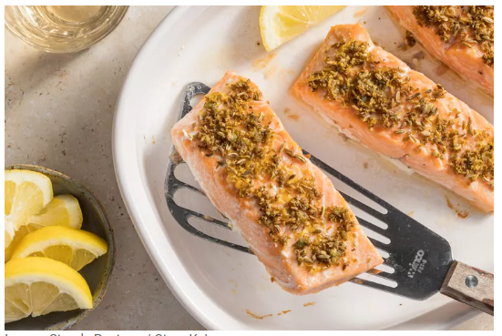
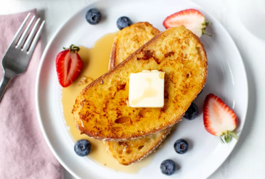

The 4-Ingredient Salmon is ready in just 20 minutes!
15/05/2024

Ingredients
2 teaspoons fennel seeds
2 garlic cloves, grated or minced
1 small lemon, zested and juiced, divided
Freshly ground black pepper
2 tablespoons olive oil
4 (6-ounce) skin-on or skinless salmon fillets
1 teaspoon kosher salt
Method
Preheat the oven to 400°F:
Arrange a rack in the middle of the oven.
Combine the garlic and spices:
Crush the fennel seeds lightly with a mortar and pestle or by placing on a cutting board and using the flat side of a chef’s knife.
Place the garlic, crushed fennel seeds, lemon zest, and several grinds of pepper in a small bowl and mix with a fork to combine.
Prepare the salmon:
Drizzle the olive oil in a baking dish large enough to fit the salmon fillets evenly with a little space between.
Season the salmon all over with salt, place in the baking dish, and turn gently to coat in the oil.
Place the salmon skin-side down and sprinkle the garlic-fennel mixture evenly on top, pressing down lightly with your fingers to adhere.
Roast the salmon:
Roast until the salmon is just cooked through and an instant-read thermometer inserted into the thickest part of the salmon registers 120°F to 130°F (for medium-rare), 10 to 15 minutes.
If you like your salmon medium-well or well-done, cook for a few minutes longer.
Drizzle with lemon juice and serve.
Challah French Toast
It is tender and fluffy enough to cut with a fork!
15/05/2024

Ingredients
4 large eggs
1 cup buttermilk
1/8 teaspoon nutmeg
1 teaspoon vanilla extract
4 tablespoons butter, divided
8 (1-inch thick) slices challah
1 teaspoon kosher salt
Powdered sugar
Maple syrup
Sliced bananas or berries (optional)
Method
Make the egg mixture for the French toast:
In an 8x8 or 9x9 baking dish, whisk together the eggs, buttermilk, milk, cinnamon, nutmeg, and vanilla.
Soak the slices of challah:
Place once slice of challah into the egg mixture and let it sit and soak up the mixture for about 30 seconds.
Gently flip the slice over and let them soak for another 30 seconds.
Cook the challah French toast:
As you place challah in the egg mixture, in a large (12-inch) nonstick skillet, melt 2 tablespoons of the butter over medium heat.
Use a pair of forks to lift out a slice of challah from the egg mixture, letting any excess liquid drip off. Transfer it to the skillet and repeat with the 3 slices of challah (you’ll cook 4 slices of challah at once).
Cook the French toast until golden brown and cooked through, flipping halfway through cooking, about 6 minutes total. Transfer to serving plates.
Add the remaining 2 tablespoons of butter to the skillet and repeat the dunking and cooking steps with the rest of the slices of challah.
Serve challah French toast:
RServe the French toast warm, topped with powdered sugar, maple syrup, and sliced bananas or berries.